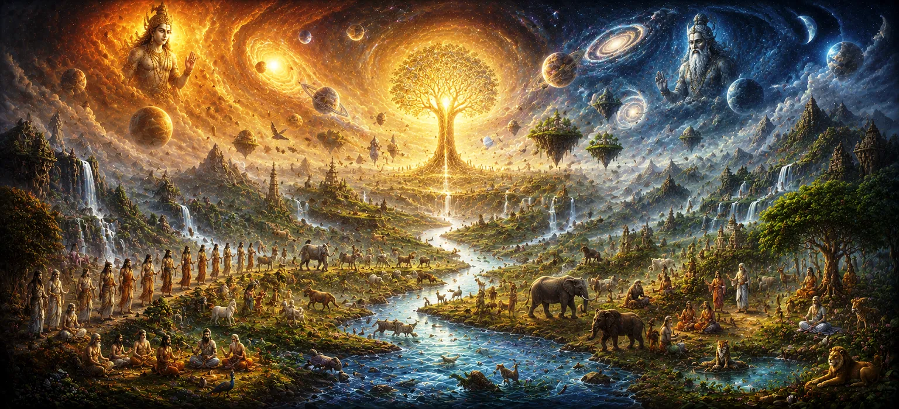

The Further Generations of Creation
Expanding beyond the immediate lineage of Sage Kashyapa described in Chapter 32, Chapter 33 of Uma Samhita presents The Further Generations of Creation. This section meticulously tracks the ongoing branching and multiplication of lineages as dynasties evolve, settle in diverse realms, and adapt through the passage of time. The text emphasizes that creation is not a singular event but a continuous process of unfolding familial and systemic growth.
This chapter provides seekers with a deeper understanding of genealogical diversification, illustrating how early ancestral roots gave way to the complex, populated cosmos of succeeding eras.
Core Topics in This Text (11 Pillars)
- 01 The Continuous Unfolding Nature of Creation →
- 02 Secondary Branching of Established Ancestral Lineages →
- 03 Patterns of Multi-Generational Growth and Settling →
- 04 Adaptation and Diversification Across Earthly and Celestial Realms →
- 05 The Role of Dynastic Leaders in Preserving Order →
- 06 Emergence and Function of Specialized Lesser Deities →
- 07 The Formation of Early Cultural and Social Structures →
- 08 Sustaining the Universal Flow Against Entropy →
- 09 Karmic Accumulation and Evolution Within Expanding Families →
- 10 Lord Shiva as the Eternal Foundation of All Generations →
- 11 Transitioning to The Cycles of the Manus →
1. The Continuous Unfolding Nature of Creation
This opening section establishes that creation is not a completed, static event, but a continuous, living flow of divine energy that perpetually manifests new generations.
Uma Samhita illustrates the dynamic nature of existence.
2. Secondary Branching of Established Ancestral Lineages
The text details how the primary roots of ancient families further subdivided, creating specialized clans that dispersed to fulfill various roles within the unfolding universe.
Lineage expansion allowed for specialized stewardship of different realms.
3. Patterns of Multi-Generational Growth and Settling
Uma Samhita describes the rhythms of development where generations settled, built, and expanded, ensuring the steady growth of civilized and natural life across cosmic territories.
Stability was forged through generations of intentional habitation.
4. Adaptation and Diversification Across Earthly and Celestial Realms
The scripture tracks how families adapted to environments ranging from earthly lands to high celestial heights, manifesting unique traits that defined their existence in these diverse spheres.
Diversity arose as a necessary response to environmental expansion.
5. The Role of Dynastic Leaders in Preserving Order
Uma Samhita highlights the critical role played by dynastic leaders in maintaining ancestral heritage, guiding social conduct, and upholding the moral order within their multiplying clans.
Leadership ensured the transmission of values through time.
6. Emergence and Function of Specialized Lesser Deities
The text details the appearance of specialized entities and minor deities, each tasked with governing specific aspects of the universe, from natural elements to human activities.
Micro-governance ensured the smooth functioning of the broader cosmos.
7. The Formation of Early Cultural and Social Structures
Uma Samhita describes the embryonic formation of societies, customs, and ethical systems that allowed emerging generations to live in harmony with both divine law and their neighbors.
Social organization served as the foundation for lasting civilization.
8. Sustaining the Universal Flow Against Entropy
The scripture emphasizes how the ongoing creation of new generations acts as a counterbalance to the natural decay of time, perpetually revitalizing the structure of the cosmos.
Vitality is maintained through the constant renewal of life.
9. Karmic Accumulation and Evolution Within Expanding Families
Uma Samhita explains that as lineages multiplied, so did the accumulation of individual and collective karma, driving the continued spiritual evolution of these burgeoning populations.
Every generation contributes to the collective spiritual journey.
10. Lord Shiva as the Eternal Foundation of All Generations
The text reiterates that amidst the vast, complex proliferation of generations and dynasties, Lord Shiva remains the unchanging anchor, providing the foundation upon which all life rests.
All growth originates from and returns to His eternal being.
11. Transitioning to The Cycles of the Manus
Having traced the expansive genealogical flow, Uma Samhita prepares to shift the narrative toward the governing temporal cycles and the roles of the Manus in steering these eras in the next chapter.
This shift prepares the seeker for understanding the temporal governance of existence.
Spiritual Insight
Chapter 33 teaches us through eleven foundational pillars that creation is a perpetual process of renewal. By observing the growth of generations, we realize that divine life is constantly blooming, ever-adapting, and forever rooted in the eternal Shiva.
Frequently Asked Questions
① What is the primary focus of Chapter 33 in Uma Samhita?
The chapter explores the continuation and diversification of lineages beyond the primary descendants of Kashyapa, tracking the ongoing expansion of families and species throughout the cosmos.
② How does this chapter advance the narrative from Kashyapa's immediate lineage?
While Chapter 32 detailed the primary genealogical roots of Sage Kashyapa, Chapter 33 expands upon the subsequent branches and multi-generational growth that populated the world.
③ What follows this chapter in the progression of Uma Samhita?
Following the overview of these expanding genealogical branches, the text transitions into the temporal cycles and the governance of eras in The Cycles of the Manus.